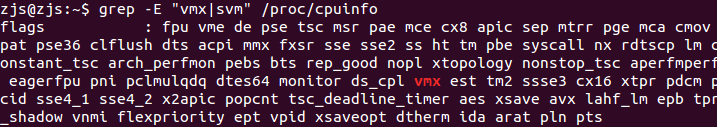
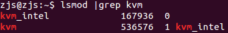
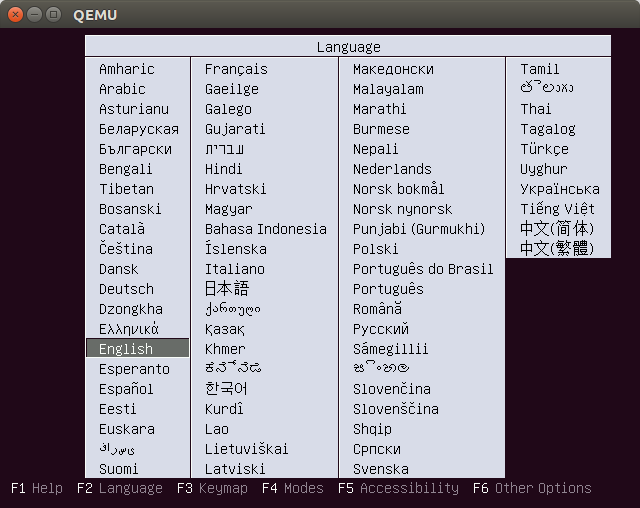
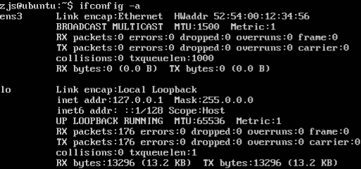
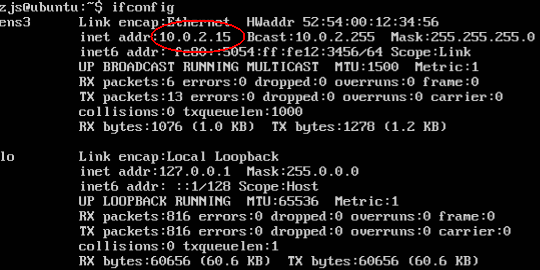
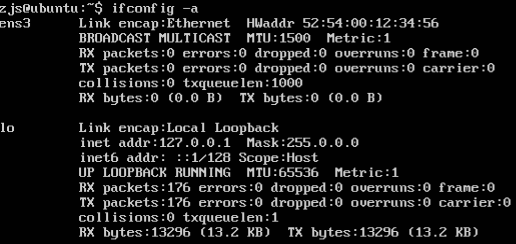
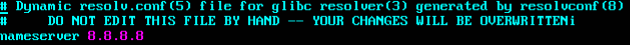

搞完了Redis向NVM的移植，接下来要做一件更有普适性的工作——用NVM页替换RAM中较冷的页，在降低硬件成本的同时保持性能基本不变。由于经常需要调试内核模块、甚至是修改内核，一不小心就会搞坏内核，导致死机。如果在物理机上做实验，一死机就要重启，很麻烦，于是想到在虚拟机中做实验。Linux上最棒的虚拟机莫过于QEMU-KVM了，当虚拟机也是x86_64架构时，可以使用Intel的VT技术加速，使得虚拟机拥有与宿主机几乎相同的性能。
安装各种工具，我最讨厌一上来就安装一大堆东西。我喜欢只安装必需的，其他则到了需要用时再说。一开始查看QEMU的安装教程，被各种什么libvirt还有巴拉巴拉一堆东西搞混了，最后看到了《kvm初体验——linux之kvm安装及使用qemu工具安装系统》，作者的想法跟我是一样，只安装必须的。
我的环境是64位Ubuntu 16.04。
============================阶段一：安装虚拟机============================
首先，更新软件仓库（可做可不做）：
sudo apt-get update
接着，查看CPU是否支持KVM所需的虚拟化技术：
grep -E "vmx|svm" /proc/cpuinfo
如果看到了有输出，则说明CPU支持虚拟化技术：

然后，检查KVM模块是否可用：
lsmod | grep kvm
如果看到了有输出，则说明KVM模块已经加载（默认加载的）：

各项检查都OK的话，开始正式的安装：
sudo apt-get install qemu
QEMU虚拟机安装好之后，我们安装一个Ubuntu Server 16.04试试~首先，创建一块虚拟磁盘：
qemu-img create -f qcow2 ubuntu.img 20G
其中-f指定虚拟磁盘格式，就用qcow2好了。ubuntu.img是虚拟磁盘的文件名，20G是指磁盘大小。然后，下载Ubuntu Server 16.04的ISO文件用来装系统。
wget http://old-releases.ubuntu.com/releases/16.04.4/ubuntu-16.04-server-amd64.iso
接着，启动虚拟机：
qemu-system-x86_64 -enable-kvm -m 512 -hda ubuntu.img -cdrom ubuntu-16.04-server-amd64.iso
-enable-kvm是告知qemu使用KVM加速，-m 512指定最大内存使用量为512MB，-hda指定一个虚拟磁盘文件作为磁盘，-cdrom则是把一个ISO文件作为光盘。不出意外的话，虚拟机启动了，进入了Ubuntu Server的安装界面：

按部就班地安装Ubuntu之后，以后就可以不用ISO文件，直接用ubuntu.img就能开机了：
qemu-system-x86_64 -enable-kvm -m 512 -hda ubuntu.img
=========================阶段二：配置NAT网络=======================
此时虚拟机中的Ubuntu，并没有网络连接。但是QEMU默认是使用NAT网络的，也就是说，虚拟机能够使用另外一个网段上网。
ifconfig -a

可以看到，有一张ens3的网卡，但是没有启用。
sudo dhclient
这样，虚拟机里的Ubuntu就会得到一个QEMU分配的IP地址：
ifconfig

虽然ping不通外网，但是可以访问外网。
============================阶段三：配置桥接网络==========================
虚拟机虽然能够上网了，但是宿主机并不能与虚拟机通信，这给开发调试带来了很多的困难。我们希望的是，可以用ssh连上虚拟机。这就要求虚拟机就像一台物理机一样，与宿主机存在于同一个网段内。
首先，在宿主机上，安装必要的工具（为了tunctl命令）：
sudo apt-get install uml-utilities
接着，创建一张虚拟TUN网卡：
sudo tunctl -t tap0 -u zjs
这里的zjs换成你的Linux用户名。然后，将网卡设置为任何人都有权限使用：
sudo chmod 0666 /dev/net/tun
之后，为tap0网卡设置一个IP地址，不要与真实的IP地址在同一个网段。比如我的真实IP地址是192.168.1.2，那么我就给tap0设置192.168.2.1：
sudo ifconfig tap0 192.168.2.1 up
宿主机需要为虚拟机开启IP数据包转发，即在192.168.1.*网段和192.168.2.*网段转发数据：
sudo echo 1 > /proc/sys/net/ipv4/ip_forward #可能sudo也会权限不够，在su以后执行即可 sudo iptables -t nat -A POSTROUTING -j MASQUERADE
宿主机的配置到此结束。
启动虚拟机，注意-net参数：
qemu-system-x86_64 -m 512 -enable-kvm -net nic -net tap,ifname=tap0,script=no ubuntu.img
进入虚拟机之后：
ifconfig -a

可以看到ens3网卡，但是没有启用。给它配置一个IP地址，比如192.168.2.2，只有与宿主机的tap0网卡在同一网段即可：
sudo ifconfig ens3 192.168.2.2 up
之后就能发现，宿主机与虚拟机可以相互ping通了！但是此时，虚拟机还不能上外网，因为虚拟机缺少网关。现在把虚拟机的tap0的地址，192.168.2.1，设置为虚拟机的网关：
sudo route add default gw 192.168.2.1
这样，也可以ping通外网了，比如ping 115.239.211.112。但是ping www.baidu.com却不行，因为缺少DNS服务器！现在就把8.8.8.8指定为虚拟机的DNS服务器：
sudo vim /etc/resolv.conf
尽管文件警告说不要手工编辑，但是我临时用用也就无所谓，追加一行：
nameserver 8.8.8.8

写入文件之后，DNS立即生效了。现在，虚拟机既能上外网，又能与宿主机通信了！